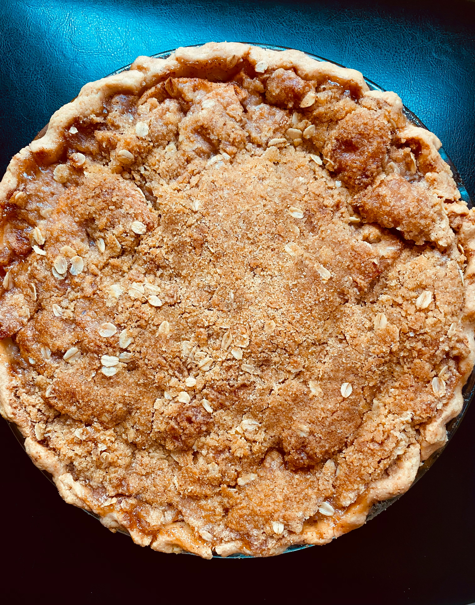

Easy Apple Crisp

This easy apple crisp is perfect for breakfast, a snack, or a sweet treat any time of day. Enjoy!
Ingredients For Apple Crisp
- 4 medium apples, peeled and sliced
- 1/4 cup granulated sugar
- 1 tablespoon lemon juice
- 1/2 teaspoon ground cinnamon
Ingredients For Topping
- 1/2 cup all-purpose flour
- 1/2 cup old-fashioned oats
- 1/4 cup brown sugar
- 1/4 cup unsalted butter, softened
- 1/4 teaspoon salt
Instructions
- Preheat your oven to 350°F (175°C)
- In a large bowl, toss the apple slices with sugar, lemon juice, and cinnamon. Transfer to a greased 8x8-inch baking dish.
- In another bowl, mix the flour, oats, brown sugar, softened butter and salt until crumbly.
- Sprinkle the topping evenly over the apples.
- Bake for 30-35 minutes, or until the topping is golden brown and the apples are tender.
- Let it cool slightly before serving. It's great with a scoop of vanilla ice cream.